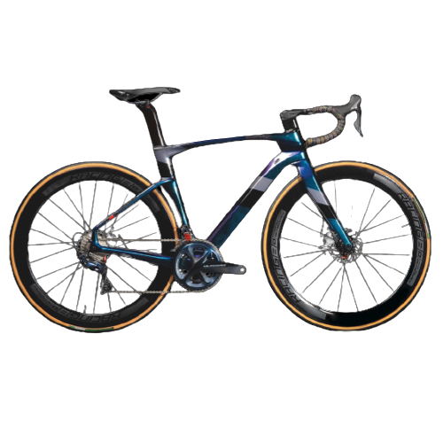

Scott Addict 100
Hemos diseñado desde la base la NUEVA SCOTT Addict 100 pensando en los que pasan mas horas pedaleando.
$9.799.000.00
El cuadro Addict tiene una geometria menos agresiva y mas confortable si la comparamos con la Addict RC,este es el modelo mas adecuado para largas salidas.
RC 100
ADDICT
>
☰